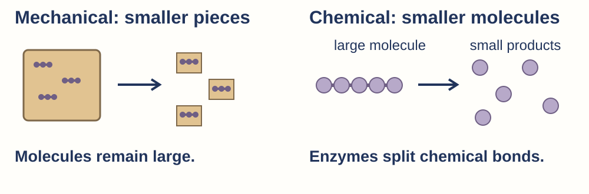
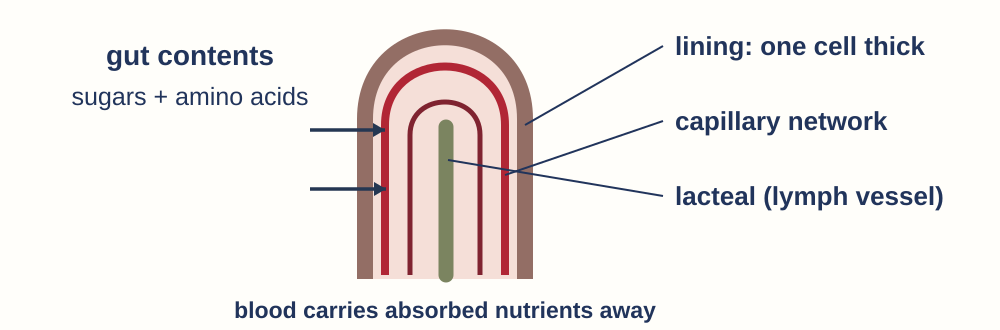

Digestive-system support cards
Attempt first. Watch one whole-class coded example, then self-code your own preserved response using the full-name key. Use the relevant support, close the content prompt and try its different recheck. Your teacher samples and confirms rechecks; everyone hands in fresh responses. Retain usual access arrangements.
R · Route
mouth → oesophagus → stomach → ____ → ____ → ____ → ____Finish the food route. Keep the liver and pancreas beside it, adding secretions rather than receiving food.
Model answer & criteria
Model response mouth → oesophagus → stomach → small intestine → large intestine → rectum → anus. Liver supplies bile; pancreas supplies enzymes through ducts into the small intestine.
Success criteria Seven canal stops in order. · Accessory organs outside food route.
Different recheck
After the stomach, where does food go? Does it pass through the pancreas?
Model answer & criteria
Model response Small intestine. No: the pancreas adds enzymes through a duct.
Success criteria Small intestine. · Pancreas secretion, not food passage.
F · Function
Worked: salivary glands → saliva containing amylase.Complete: gall bladder → __; liver → __. Then match pancreas → enzymes or faeces.
Model answer & criteria
Model response Gall bladder stores/releases bile. Liver makes bile. Pancreas supplies digestive enzymes to the small intestine.
Success criteria Accurate structure/action links. · No food entering accessory organs.
Different recheck
What does the gall bladder do, and where is bile made?
Model answer & criteria
Model response Gall bladder stores/releases bile; liver makes it.
Success criteria Storage and production distinguished.
M · Pieces and molecules

Finish: chewing changes the size of __; enzymes change large __ into smaller products.
Model answer & criteria
Model response Chewing changes food pieces. Enzymes change large molecules into smaller products.
Success criteria Pieces and molecules distinguished.
Different recheck
A stomach churns bread. Is that alone enough to turn starch into sugars? Explain.
Model answer & criteria
Model response No. Churning mixes and breaks food into smaller pieces; enzymes are needed to break starch molecules down.
Success criteria No. · Churning does not split starch molecules. · Enzyme action needed.
E · Enzymes
| Enzyme | Food | Final products |
|---|---|---|
| Carbohydrases, including amylase | starch | small sugars |
| proteases | __ | __ |
| lipase | __ | __ |
Model answer & criteria
Model response Proteases: protein → amino acids. Lipase: lipid → fatty acids and glycerol. Carbohydrases collectively finish starch digestion to absorbable small sugars.
Success criteria Both missing rows correct. · Amylase is one carbohydrase, not all carbohydrate-digesting enzymes.
Different recheck
Which enzyme digests lipid, and what are its final products?
Model answer & criteria
Model response Lipase; fatty acids and glycerol in this school-level model.
Success criteria Enzyme and both final products.
A · Absorption

Use: The __ increases/decreases __, so __. Name the process of crossing the lining, separately from molecular breakdown.
Model answer & criteria
Model response Absorption is crossing the lining. For example: the thin lining shortens the crossing distance, so molecules can cross quickly.
Success criteria Absorption, not digestion. · Feature linked to its effect.
Different recheck
A shorter path across the lining helps which process? Why?
Model answer & criteria
Model response Absorption: molecules cross a shorter distance through the thin lining.
Success criteria Correct process. · Shorter crossing distance.